The six arenas: where they are and where they could be
Every arena below shows two frames from the game as it runs today (desktop
Godot, Forward+, the real fight camera, captured 24 September), then a concept target rendered
in Recraft. The concepts set the bar for mood, light, crowd and hazard readability. They are
not layouts: floor plans and hazard timings stay exactly as they are. The full teardown and
ranked gap list is in docs/aaa/arenas.md.
One thing to notice first: in every "current" wide frame the arena floats in empty black. Nothing is built beyond the walls in any arena today.
The Yard
Tutorial arena. Centre spike patch. Identity: a club arena in a breaker's yard at night.
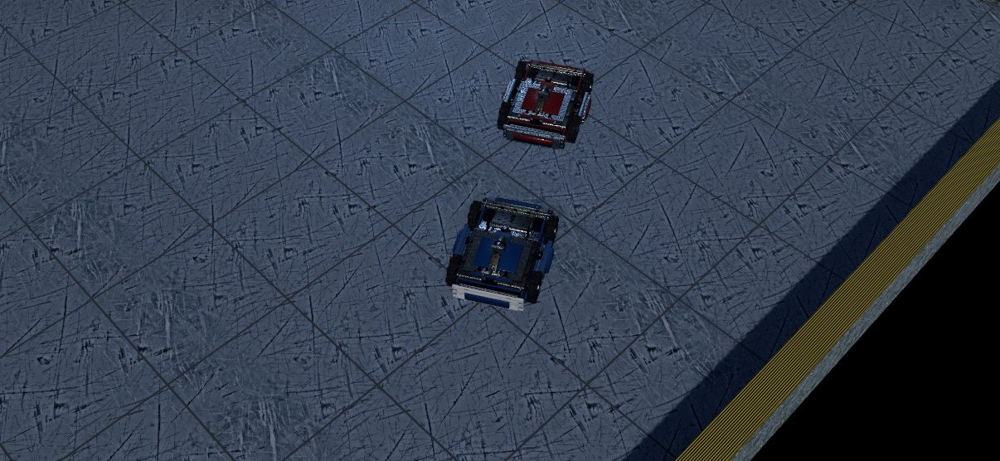
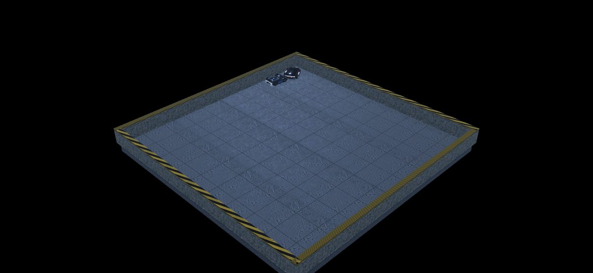

Crowd
- Card crowd standing on stacked containers right behind the far walls, so it enters the top of the fight frame.
- Phone lights as a sparkle layer; the whole yard lifts its arms on a big hit.
Hazard cues
- A lamp bezel round the spike patch fills over the last 1.5 s, then goes red as the spikes rise.
- A pneumatic hiss half a second before the existing spike sound.
- A light dust puff and a small camera kick on the rise.
Ambient effects
- Dust motes in the flood beams, drifting grit, one flickering sodium lamp.
- Oil stains, tyre marks and weld seams on the plate floor.
Hero lighting
- Two warm sodium flood towers against a cold blue night; the bots get a warm key and a cold rim.
The Grinder
Two always-on floor grinders on the flanks. Identity: a working machine shop, cold steel and hot sparks.
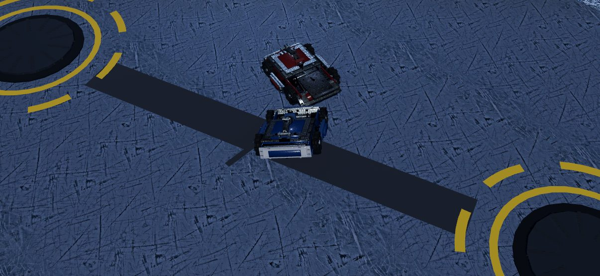
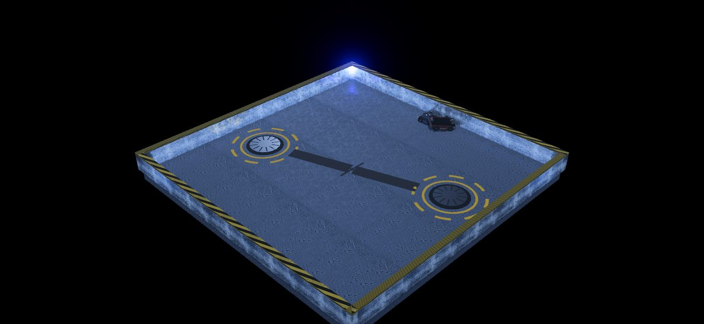

Crowd
- Metal bleachers behind safety mesh under a gantry crane.
- The crowd leans in and flashes when a machine is dragged onto a disc.
Hazard cues
- Machined discs with a motion-blur card, so the spin reads in a still frame.
- The ring glows from cool to hot orange as any bot comes within 1.2 m.
- An idle spark trickle always, a fountain plus a camera kick on contact.
Ambient effects
- Metal dust hanging in fluorescent light, one tube flickering.
- Grind marks and filings build up round each well as the fight goes on.
Hero lighting
- Cold steel-blue overheads; the only warm light is the sparks themselves.
The Trapdoor
Central pit under a retracting cover. Identity: an underground bunker where the pit is the light source.
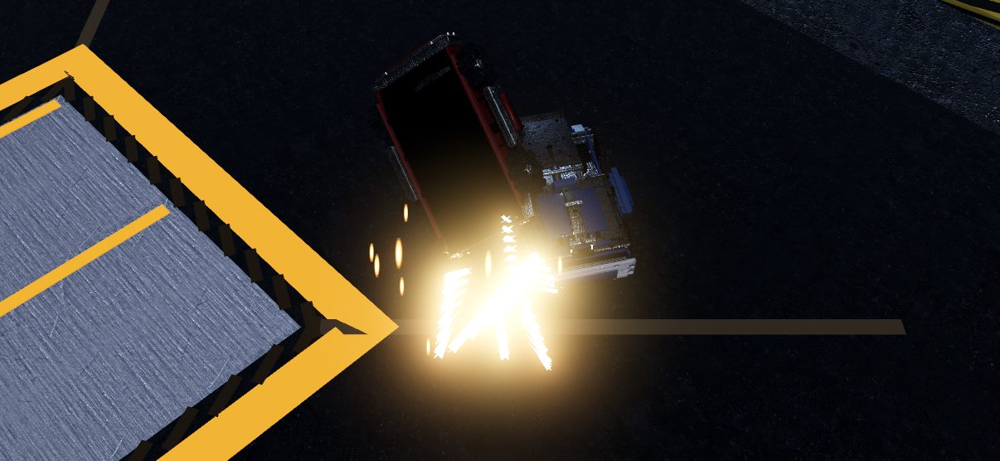
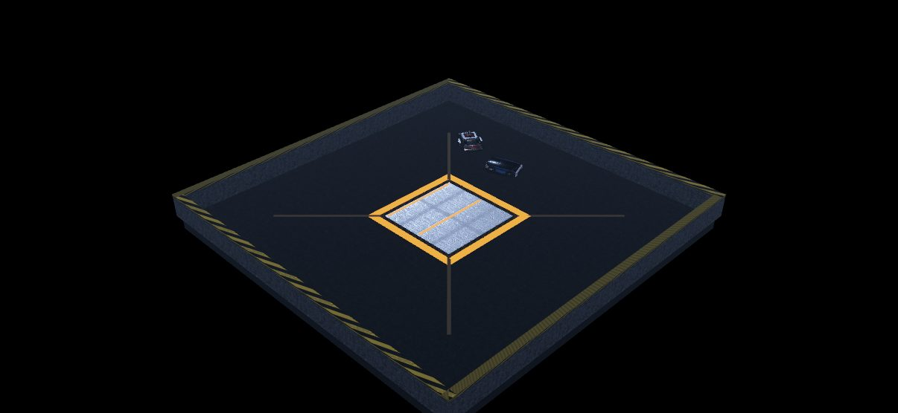

Crowd
- Steep dark stands; the crowd is mostly silhouettes and small lights.
- A collective gasp and a flash burst when a machine goes in.
Hazard cues
- Klaxon at three seconds out (today the sound only plays at the open).
- Four rotating amber beacons on the rim spin up; the rim strip runs toward the seam.
- A 3, 2, 1 ring projected on the cover itself.
Ambient effects
- Red haze and slow embers rising out of the open shaft.
- Cold volumetric downlights on the high tier, additive cones on older phones.
Hero lighting
- Amber is the only warm colour in the room; the open pit glows red from far below.
Furnace
Wall flame jets and a conveyor. Identity: a foundry with molten metal behind the walls.
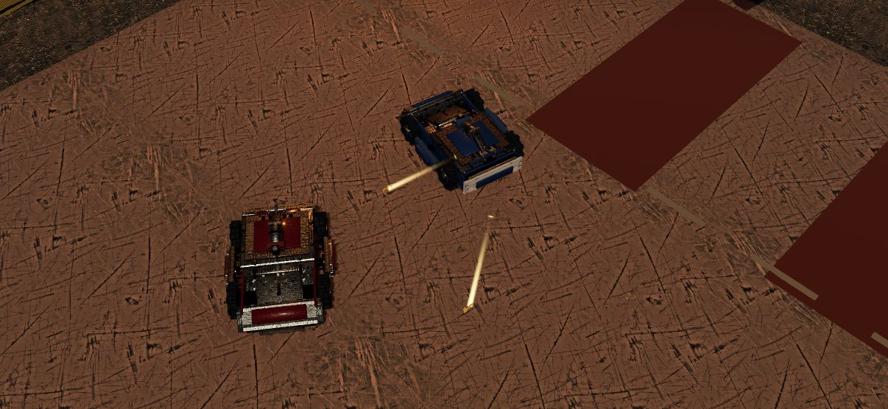
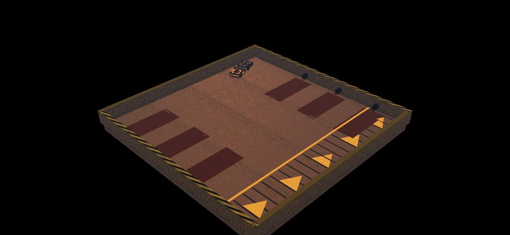
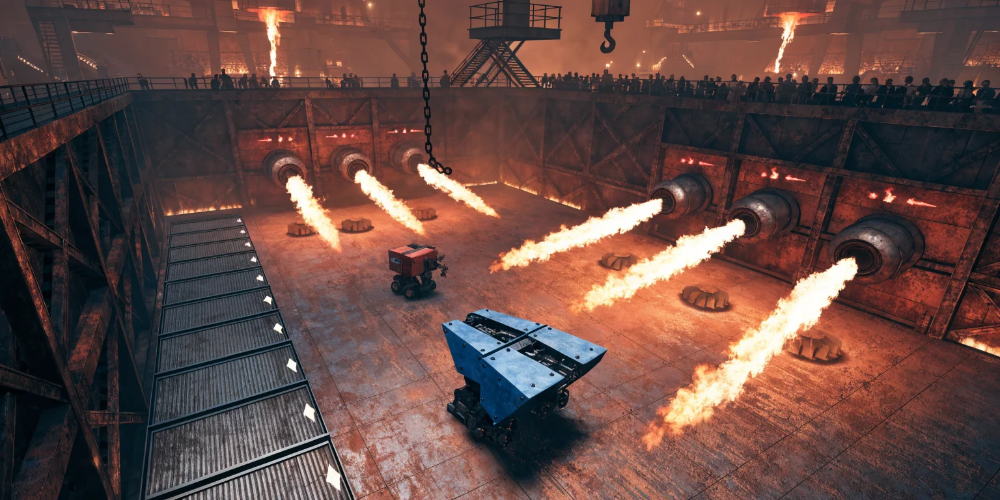
Crowd
- Catwalk stands lit orange from below, framed by chains and hooks.
- The crowd flinches back from the wall each time a bank fires.
Hazard cues
- One second before a bank fires: nozzles glow red, a pilot flame and gas hiss start, the floor fan lights amber.
- The fan becomes a scorch mark that darkens with every burn.
- The belt slats scroll at belt speed, twice as fast in the endgame.
Ambient effects
- Embers everywhere, heat haze over the floor on the high tier, smoke at venue height.
- A crucible pour in the backdrop as a slow emissive loop.
Hero lighting
- Orange and deep red from below, dark steel above; each firing jet throws its own light.
The Crush
Two wall rams that pin and flatten. Identity: a hydraulic press hall with oppressive scale.
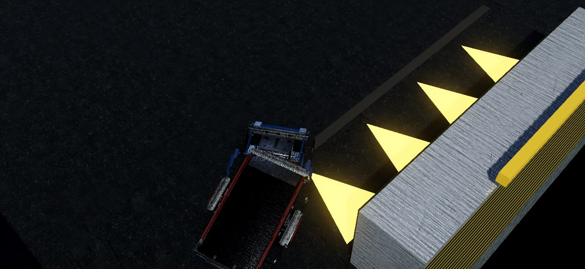
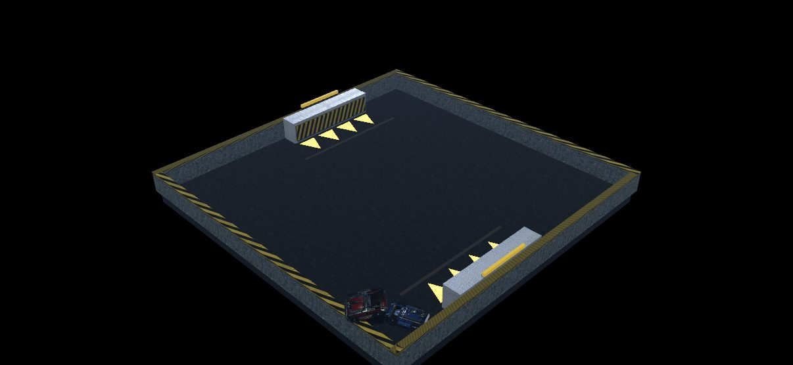
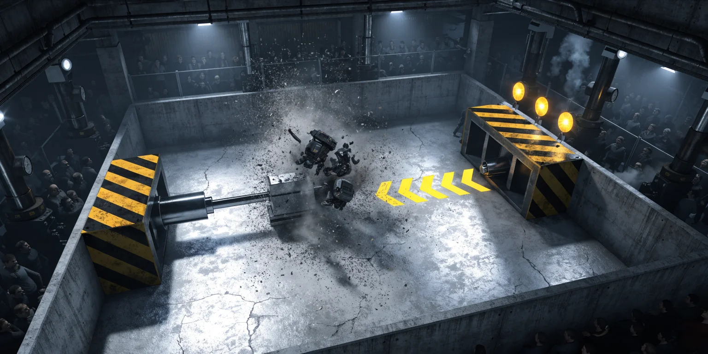
Crowd
- Concrete stands behind thick safety glass, above the press machinery line.
- A crowd roar timed to the ram's hold, the half second a bot is pinned.
Hazard cues
- A rising hydraulic whine over the existing two second warning, so you hear it off screen.
- Rotating yellow beacons over each ram; wall gauges climb into the red.
- Heavy camera kick, haptic thump and a dust burst on the stroke; a crack decal stays.
Ambient effects
- Steam venting from pipes, a puff when a ram retracts, grit settling after each hit.
Hero lighting
- Cold white work light pools on pale concrete; hazard yellow is the only saturated colour.
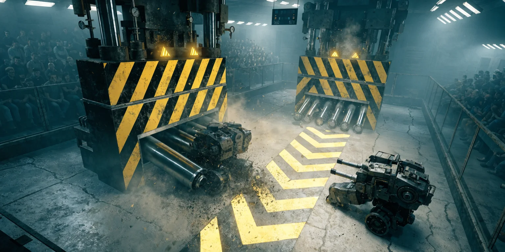
Coliseum
Championship arena, every hazard plus spinning floor discs. Identity: the stadium final.
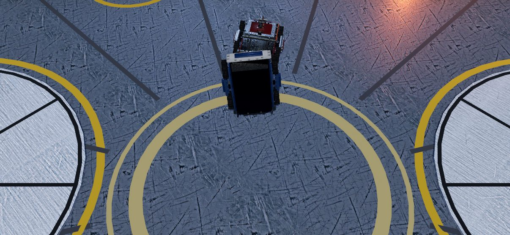
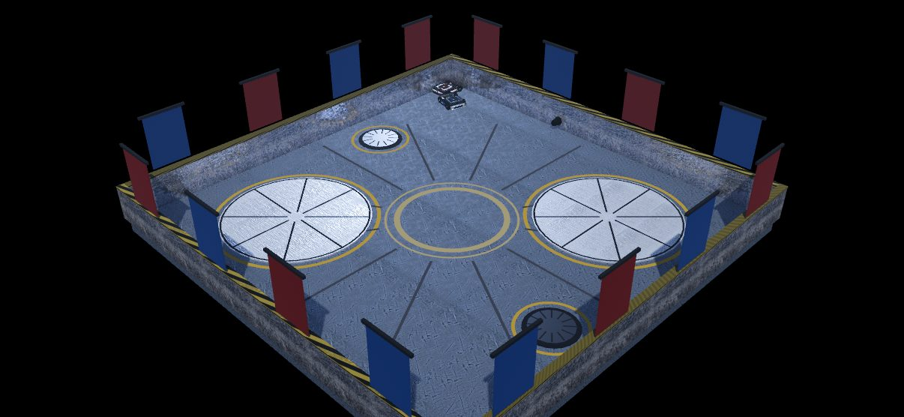

Crowd
- Full stadium on all four sides, near cards plus far strips, thousands of flashes.
- One stand leans toward each machine's livery colour.
Hazard cues
- All the shared cues from the other five, in one grammar.
- Turntable rims lit with arrows that scroll the way the floor will carry you.
Ambient effects
- Moving-head beams through haze, banners that sway, confetti on the result.
- A jumbotron showing the live fight from a second low-resolution camera.
Hero lighting
- Polished dark floor as a mirror for the light show; blue and red with gold.
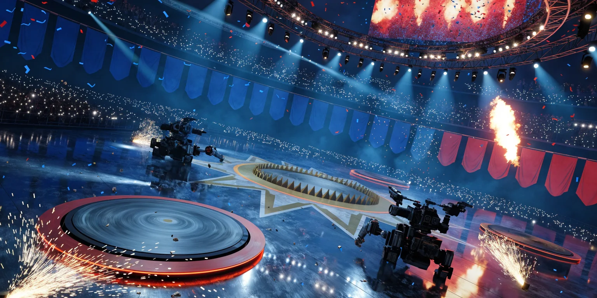
A shared arena kit
Six arenas should not cost six times. Build these pieces once, as Blender scripts
in Tools/blender/ and one shared Godot scene library, then dress each arena with the
kit plus one hero set piece of its own. Every piece is presentation only: no collision with bots
or debris, no shared random numbers.
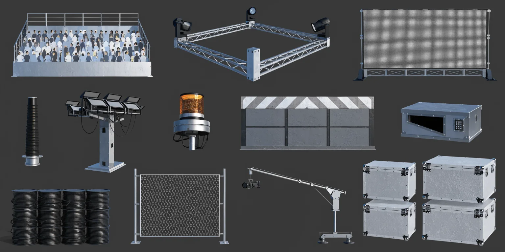
| Kit piece | What it is | Reused by |
|---|---|---|
| Stand modules | Three-tier stand in three skins (containers, metal bleacher, concrete behind glass) and a stadium tier. Snaps to any wall length. Merged per material, lightmapped. | All six |
| Crowd impostors | MultiMesh cards from a Blender-rendered atlas (16 poses, 4 frames), one shader, one "excitement" value driven by the moments the crowd audio already reacts to. Flash layer on top. | All six |
| Wall trims | Padded, meshed, glazed and nozzle-bearing wall faces with a lamp strip that the telegraph layer can drive. | All six |
| Lighting truss and moving heads | Truss segments and corner towers; beams are additive cards, at most two real spot lights. | Coliseum, the Trapdoor, Yard |
| Screens | A framed screen that shows a low-resolution live feed on the high tier and a looping sting elsewhere. | All six |
| Beacons and bezels | Rotating beacon, lamp bezel ring, floor light strip; states idle, armed, firing, aftermath. | All six |
| Telegraph layer | One node that reads each arena's hazard clocks and drives bezels, floor cues, beacons, anticipation sounds, camera kick and haptics in one grammar. | All six |
| Decal set | Scorch, crack, grind marks, oil, tyre marks, filings, grit; a hazard slice of the existing decal pool. | All six |
| Ambient FX set | Dust motes, steam, embers, haze sheets, flicker, pyro columns, spark curtain, confetti, all under one per-tier particle budget. | All six |
| Hero hazard models | Spike block, grinder disc and well, nozzle block, ram with piston rods, pit shaft, turntable. Visual meshes only; the collision shapes stay as they are. | Coliseum reuses all of them |
PixelLab: I would not use it. Brief v3 retired PixelLab for this project, and pixel-art crowd cards or signs would sit badly against machines held to the Gear.Club Stradale bar. The crowd cards should be rendered from Blender so their light and palette match; Recraft covers screen content and plain signage plates.
Effort estimate
In agent-days, one Opus agent working a day on disjoint files. The kit and the six dressings can run in parallel once the kit contracts are written.
| Work | Contents | Agent-days |
|---|---|---|
| Quick wins | Floor exposure on the Crush and the Trapdoor, wall tint blow-out, idle grinder sparks, camera kick on hazards. Visible in every fight on day one. | 1 |
| Kit: stands and wall trims | Blender scripts, four skins, merge and lightmap set-up | 3 |
| Kit: crowd impostors | Crowd atlas render, MultiMesh and shader, excitement hook, tiers | 3 |
| Kit: truss, screens, beacons | Models, beam cards, live-feed screen | 2.5 |
| Kit: telegraph layer | Read-only hazard schedule on each arena, one shared driver, shake and haptic hooks | 2.5 |
| Kit: anticipation audio | Hiss, whine, klaxon, clunk, pilot flame, crowd gasp | 1.5 |
| Kit: ambient FX and decals | Dust, steam, embers, haze, flicker, pyro, confetti; decal set and pool slice | 3.5 |
| Kit: hero hazard models | Six Blender hazard sets | 3 |
| Dress the six | Yard 2, Grinder 2, Trapdoor 2.5, Furnace 3, Crush 2.5, Coliseum 4 | 16 |
| Integration | Lighting pass and bakes 2, device performance and tier tuning 2, desktop frames and owner review rounds 2 | 6 |
| Total | About two weeks of calendar time with six agents in parallel | 42 |
Decisions needed from you
1. Six buildings, or one studio dressed six ways? Six distinct venues (scrapyard, machine shop, bunker, foundry, press hall, stadium) built from the shared kit, or one televised studio whose stands and truss stay the same and only the floor, hazards and colour change?
My pick: six buildings. It is what makes each arena recognisable from a thumbnail, and the kit keeps the cost to about 16 agent-days of dressing.
2. A visible crowd, or a crowd of lights? Rendered people on cards that wave and jump (as in the concepts), or a darker house where the crowd is silhouettes and thousands of small lights?
My pick: rendered people near the walls, lights further back. If you want one or the other, the lights-only version is cheaper and more broadcast in feel.
3. An entrance before every fight, or straight to the countdown? A 3 to 4 second flyover with lights, crowd surge and pyro before the countdown (tap to skip), or keep today's straight start with pyro only on FIGHT?
My pick: the entrance, skippable, and shortened automatically after the first fight in an arena. Flag: it lengthens the pre-roll and touches the camera rig, but never the countdown tick.
4. One warning language, or a different one per arena? Every hazard warns the same way (amber, then red, the same lead time, one family of sounds), or each arena gets its own bespoke warnings?
My pick: one language with per-arena flavour in the sounds and props. Flag: the spikes and flame jets have no warning today, so adding one makes those arenas easier for the player. No simulation number changes.
5. Keep the fight camera, or tilt it to show more venue? Keep pitch 50 and the long lens and build stands tall and close to the walls, or lower the default pitch a few degrees so more of the venue is in every frame?
My pick: keep the camera. The fight read and the camera tests were tuned on your phone; the venue can come to the camera instead. Flag: changing it is a gameplay change.
Recraft credits spent on this page: 18 (nine images at 2 each). Current frames: desktop Godot through Arena/qa/arena_capture.tscn, a QA only scene.